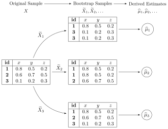

Code
source("../_globals.r")DSAN 5000: Data Science and Analytics
Section 02
source("../_globals.r")\[ \DeclareMathOperator*{\argmax}{argmax} \DeclareMathOperator*{\argmin}{argmin} \newcommand{\bigexpect}[1]{\mathbb{E}\mkern-4mu \left[ #1 \right]} \newcommand{\definedas}{\overset{\text{defn}}{=}} \newcommand{\definedalign}{\overset{\phantom{\text{defn}}}{=}} \newcommand{\eqeventual}{\overset{\text{eventually}}{=}} \newcommand{\expect}[1]{\mathbb{E}[#1]} \newcommand{\expectsq}[1]{\mathbb{E}^2[#1]} \newcommand{\fw}[1]{\texttt{#1}} \newcommand{\given}{\mid} \newcommand{\green}[1]{\color{green}{#1}} \newcommand{\heads}{\outcome{heads}} \newcommand{\iqr}{\text{IQR}} \newcommand{\kl}{\text{KL}} \newcommand{\lik}{\mathcal{L}} \newcommand{\mle}{\textsf{ML}} \newcommand{\orange}[1]{\color{orange}{#1}} \newcommand{\outcome}[1]{\textsf{#1}} \newcommand{\param}[1]{{\color{purple} #1}} \newcommand{\paramDist}{\param{\boldsymbol\theta_\mathcal{D}}} \newcommand{\pgsamplespace}{\{\green{1},\green{2},\green{3},\purp{4},\purp{5},\purp{6}\}} \newcommand{\prob}[1]{P\left( #1 \right)} \newcommand{\purp}[1]{\color{purple}{#1}} \newcommand{\red}[1]{\color{red}#1} \newcommand{\spacecap}{\; \cap \;} \newcommand{\spacewedge}{\; \wedge \;} \newcommand{\tails}{\outcome{tails}} \newcommand{\Var}[1]{\text{Var}[#1]} \newcommand{\bigVar}[1]{\text{Var}\mkern-4mu \left[ #1 \right]} \]
Today’s Planned Schedule (Section 02):
| Start | End | Topic | Recording | |
|---|---|---|---|---|
| Lecture | 12:30pm | 1:10pm | Quiz Prep → | |
| 1:10pm | 1:30pm | Quiz 5.2 | ||
| 1:30pm | 2:00pm | Random Forests Overview → | ||
| Break! | 2:00pm | 2:10pm | ||
| 2:10pm | 2:40pm | Bagging and Boosting → | ||
| 2:40pm | 3:00pm | Student Presentation |
Last week we started with classification task (of good vs. bad skiing weather), to get a feel for how decision trees approach these tasks
This week, for a deeper dive into the math/code, let’s start with regression. But why?
\[ \mathscr{L}_{\text{MSE}}\left(\widehat{f}~\right) = \sum_{i=1}^N \left(\widehat{f}(X_i) - \ell_i\right)^2 \]
Once we’re comfortable with how to approach this regression task, we’ll move back to the classification task, where there is no longer a single “obvious” choice for the loss function \(\mathscr{L}\left(\widehat{f}~\right)\)
library(tidyverse)
library(latex2exp)
expr_pi2 <- TeX("$\\frac{\\pi}{2}$")
expr_pi <- TeX("$\\pi$")
expr_3pi2 <- TeX("$\\frac{3\\pi}{2}$")
expr_2pi <- TeX("$2\\pi$")
x_range <- 2 * pi
x_coords <- seq(0, x_range, by = x_range / 100)
num_x_coords <- length(x_coords)
data_df <- tibble(x = x_coords)
data_df <- data_df |> mutate(
y_raw = sin(x),
y_noise = rnorm(num_x_coords, 0, 0.15)
)
data_df <- data_df |> mutate(
y = y_raw + y_noise
)
#y_coords <- y_raw_coords + y_noise
#y_coords <- y_raw_coords
#data_df <- tibble(x = x, y = y)
reg_tree_plot <- ggplot(data_df, aes(x=x, y=y)) +
geom_point(size = g_pointsize / 2) +
dsan_theme("half") +
labs(
x = "Feature",
y = "Label"
) +
# geom_vline(
# xintercept = pi,
# linewidth = g_linewidth,
# linetype = "dashed"
# ) +
scale_x_continuous(
breaks=c(0,pi/2,pi,(3/2)*pi,2*pi),
labels=c("0",expr_pi2,expr_pi,expr_3pi2,expr_2pi)
)
reg_tree_plot
library(ggtext)
# x_lt_pi = data_df |> filter(x < pi)
# mean(x_lt_pi$y)
data_df <- data_df |> mutate(
pred_sq_err0 = (y - 0)^2
)
mse0 <- mean(data_df$pred_sq_err0)
mse0_str <- sprintf("%.3f", mse0)
reg_tree_plot +
geom_hline(
yintercept = 0,
color=cbPalette[1],
linewidth = g_linewidth
) +
geom_segment(
aes(x=x, xend=x, y=0, yend=y)
) +
geom_text(
aes(x=(3/2)*pi, y=0.5, label=paste0("MSE = ",mse0_str)),
size = 10,
#box.padding = unit(c(2,2,2,2), "pt")
)\[ \widehat{y}(x) = \begin{cases} \phantom{-}\frac{2}{\pi} &\text{if }x < \pi, \\ -\frac{2}{\pi} &\text{otherwise.} \end{cases} \]

get_y_pred <- function(x) ifelse(x < pi, 2/pi, -2/pi)
data_df <- data_df |> mutate(
pred_sq_err1 = (y - get_y_pred(x))^2
)
mse1 <- mean(data_df$pred_sq_err1)
mse1_str <- sprintf("%.3f", mse1)
decision_df <- tribble(
~x, ~xend, ~y, ~yend,
0, pi, 2/pi, 2/pi,
pi, 2*pi, -2/pi, -2/pi
)
reg_tree_plot +
geom_segment(
data=decision_df,
aes(x=x, xend=xend, y=y, yend=yend),
color=cbPalette[1],
linewidth = g_linewidth
) +
geom_segment(
aes(x=x, xend=x, y=get_y_pred(x), yend=y)
) +
geom_text(
aes(x=(3/2)*pi, y=0.5, label=paste0("MSE = ",mse1_str)),
size = 9,
#box.padding = unit(c(2,2,2,2), "pt")
)\[ \widehat{y}(x) = \begin{cases} \phantom{-}\frac{9}{4\pi} &\text{if }x < \frac{2\pi}{3}, \\ \phantom{-}0 &\text{if }\frac{2\pi}{3} \leq x \leq \frac{4\pi}{3} \\ -\frac{9}{4\pi} &\text{otherwise.} \end{cases} \]

cut1 <- (2/3) * pi
cut2 <- (4/3) * pi
pos_mean <- 9 / (4*pi)
get_y_pred <- function(x) ifelse(x < cut1, pos_mean, ifelse(x < cut2, 0, -pos_mean))
data_df <- data_df |> mutate(
pred_sq_err1b = (y - get_y_pred(x))^2
)
mse1b <- mean(data_df$pred_sq_err1b)
mse1b_str <- sprintf("%.3f", mse1b)
decision_df <- tribble(
~x, ~xend, ~y, ~yend,
0, (2/3)*pi, pos_mean, pos_mean,
(2/3)*pi, (4/3)*pi, 0, 0,
(4/3)*pi, 2*pi, -pos_mean, -pos_mean
)
reg_tree_plot +
geom_segment(
data=decision_df,
aes(x=x, xend=xend, y=y, yend=yend),
color=cbPalette[1],
linewidth = g_linewidth
) +
geom_segment(
aes(x=x, xend=x, y=get_y_pred(x), yend=y)
) +
geom_text(
aes(x=(3/2)*pi, y=0.5, label=paste0("MSE = ",mse1b_str)),
size = 9,
#box.padding = unit(c(2,2,2,2), "pt")
)
\[ \widehat{y}(x) = \begin{cases} \phantom{-}0.695 &\text{if }x < (1-c)\pi, \\ \phantom{-}0 &\text{if }(1-c)\pi \leq x \leq (1+c)\pi \\ -0.695 &\text{otherwise,} \end{cases} \]
with \(c \approx 0.113\), gives us:

c <- 0.113
cut1 <- (1 - c) * pi
cut2 <- (1 + c) * pi
pos_mean <- 0.695
get_y_pred <- function(x) ifelse(x < cut1, pos_mean, ifelse(x < cut2, 0, -pos_mean))
data_df <- data_df |> mutate(
pred_sq_err1b = (y - get_y_pred(x))^2
)
mse1b <- mean(data_df$pred_sq_err1b)
mse1b_str <- sprintf("%.3f", mse1b)
decision_df <- tribble(
~x, ~xend, ~y, ~yend,
0, cut1, pos_mean, pos_mean,
cut1, cut2, 0, 0,
cut2, 2*pi, -pos_mean, -pos_mean
)
reg_tree_plot +
geom_segment(
data=decision_df,
aes(x=x, xend=xend, y=y, yend=yend),
color=cbPalette[1],
linewidth = g_linewidth
) +
geom_segment(
aes(x=x, xend=x, y=get_y_pred(x), yend=y)
) +
geom_text(
aes(x=(3/2)*pi, y=0.5, label=paste0("MSE = ",mse1b_str)),
size = 9,
#box.padding = unit(c(2,2,2,2), "pt")
)
\[ \mathscr{L}_{MC}(R) = 1 - \widehat{p}_{R} \]
library(tidyverse)
library(latex2exp)
my_mc <- function(p) 0.5 - abs(0.5 - p)
x_vals <- seq(0, 1, 0.01)
mc_vals <- sapply(x_vals, my_mc)
phat_label <- TeX('$\\widehat{p}$')
data_df <- tibble(x=x_vals, loss_mc=mc_vals)
ggplot(data_df, aes(x=x, y=loss_mc)) +
geom_line(linewidth = g_linewidth) +
dsan_theme("half") +
labs(
x = phat_label,
y = "Misclassification Loss"
)
\[ \mathscr{L}_{\text{Ent}}(\widehat{p}) = -\sum_{i=1}^K \widehat{p}_k\log_2(\widehat{p}_k) \]
\[ \mathscr{L}_{\text{Gini}}(\widehat{p}) = -\sum_{i=1}^K \widehat{p}_k(1-\widehat{p}_k) \]
library(tidyverse)
library(latex2exp)
phat_label <- TeX('$\\widehat{p}')
my_ent <- function(p) -(p*log2(p) + (1-p)*log2(1-p))
my_gini <- function(p) 4*p*(1-p)
x_vals <- seq(0.01, 0.99, 0.01)
ent_vals <- sapply(x_vals, my_ent)
ent_df <- tibble(x=x_vals, y=ent_vals, Measure="Entropy")
gini_vals <- sapply(x_vals, my_gini)
gini_df <- tibble(x=x_vals, y=gini_vals, Measure="Gini")
data_df <- bind_rows(ent_df, gini_df)
ggplot(data=data_df, aes(x=x, y=y, color=Measure)) +
geom_line(linewidth = g_linewidth) +
dsan_theme("half") +
scale_color_manual(values=c(cbPalette[1], cbPalette[2])) +
labs(
x = phat_label,
y = "Measure Value",
title = "Entropy vs. Gini Coefficient"
)


\[ (j^*, s^*) = \argmax_{j, s}\left[ \mathscr{L}(R_1(j,s)) + \mathscr{L}(R_2(j,s)) \right], \]
where
\[ R_1(j, s) = \{X \mid X_j < s\}, \; R_2(j, s) = \{X \mid X_j \geq s\}. \]
library(tidyverse)
library(lubridate)
sample_size <- 100
day <- seq(ymd('2023-01-01'),ymd('2023-12-31'),by='weeks')
lat_bw <- 5
latitude <- seq(-90, 90, by=lat_bw)
ski_df <- expand_grid(day, latitude)
ski_df <- tibble::rowid_to_column(ski_df, var='obs_id')
#ski_df |> head()
# Data-generating process
lat_cutoff <- 35
ski_df <- ski_df |> mutate(
near_equator = abs(latitude) <= lat_cutoff,
northern = latitude > lat_cutoff,
southern = latitude < -lat_cutoff,
first_3m = day < ymd('2023-04-01'),
last_3m = day >= ymd('2023-10-01'),
middle_6m = (day >= ymd('2023-04-01')) & (day < ymd('2023-10-01')),
snowfall = 0
)
# Update the non-zero sections
mu_snow <- 10
sd_snow <- 2.5
# How many northern + first 3 months
num_north_first_3 <- nrow(ski_df[ski_df$northern & ski_df$first_3m,])
ski_df[ski_df$northern & ski_df$first_3m, 'snowfall'] = rnorm(num_north_first_3, mu_snow, sd_snow)
# Northerns + last 3 months
num_north_last_3 <- nrow(ski_df[ski_df$northern & ski_df$last_3m,])
ski_df[ski_df$northern & ski_df$last_3m, 'snowfall'] = rnorm(num_north_last_3, mu_snow, sd_snow)
# How many southern + middle 6 months
num_south_mid_6 <- nrow(ski_df[ski_df$southern & ski_df$middle_6m,])
ski_df[ski_df$southern & ski_df$middle_6m, 'snowfall'] = rnorm(num_south_mid_6, mu_snow, sd_snow)
# And collapse into binary var
ski_df['good_skiing'] = ski_df$snowfall > 0
# This converts day into an int
ski_df <- ski_df |> mutate(
day_num = lubridate::yday(day)
)
#print(nrow(ski_df))
ski_sample <- ski_df |> slice_sample(n = sample_size)
ski_sample |> write_csv("assets/ski.csv")
month_vec <- c(ymd('2023-01-01'), ymd('2023-02-01'), ymd('2023-03-01'), ymd('2023-04-01'), ymd('2023-05-01'), ymd('2023-06-01'), ymd('2023-07-01'), ymd('2023-08-01'), ymd('2023-09-01'), ymd('2023-10-01'), ymd('2023-11-01'), ymd('2023-12-01'))
month_labels <- c("Jan", "Feb", "Mar", "Apr", "May", "Jun", "Jul", "Aug", "Sep", "Oct", "Nov", "Dec")
lat_vec <- c(-90, -60, -30, 0, 30, 60, 90)
ggplot(
ski_sample,
aes(
x=day,
y=latitude,
#shape=good_skiing,
color=good_skiing
)) +
geom_point(
size = g_pointsize / 1.5,
#stroke=1.5
) +
dsan_theme() +
labs(
x = "Time of Year",
y = "Latitude",
shape = "Good Skiing?"
) +
scale_shape_manual(name="Good Skiing?", values=c(1, 3)) +
scale_color_manual(name="Good Skiing?", values=c(cbPalette[1], cbPalette[2]), labels=c("No (Sunny)","Yes (Snowy)")) +
scale_x_continuous(
breaks=c(month_vec,ymd('2024-01-01')),
labels=c(month_labels,"Jan")
) +
scale_y_continuous(breaks=lat_vec)
ski_sample |> count(good_skiing)# A tibble: 2 × 2
good_skiing n
<lgl> <int>
1 FALSE 64
2 TRUE 36\[ \mathscr{L}(R_i) = -[(0.64)\log_2(0.64) + (0.36)\log_2(0.36)] \approx 0.9427 \]
Given that \(\mathscr{L}(R_P) \approx 0.9427\), let’s think through two choices for the first split:
\[ \begin{align*} R_1^A &= \{X_i \mid X_{i,\text{lat}} < -42.5\} \\ R_2^A &= \{X_i \mid X_{i,\text{lat}} \geq -42.5\} \end{align*} \]
ski_sample <- ski_sample |> mutate(
lat_lt_n425 = latitude < -42.5
)
r1a <- ski_sample |> filter(lat_lt_n425) |> summarize(
good_skiing = sum(good_skiing),
total = n()
) |> mutate(region = "R1(A)", .before=good_skiing)
r2a <- ski_sample |> filter(lat_lt_n425 == FALSE) |> summarize(
good_skiing = sum(good_skiing),
total = n()
) |> mutate(region = "R2(A)", .before=good_skiing)
choice_a_df <- bind_rows(r1a, r2a)
choice_a_df# A tibble: 2 × 3
region good_skiing total
<chr> <int> <int>
1 R1(A) 21 32
2 R2(A) 15 68\[ \begin{align*} \mathscr{L}(R_1^A) &= -\mkern-4mu\left[ \frac{21}{32}\log_2\frac{21}{32} + \frac{11}{32}\log_2\frac{11}{32} \right] \approx 0.9284 \\ \mathscr{L}(R_2^A) &= -\mkern-4mu\left[ \frac{15}{68}\log_2\frac{15}{68} + \frac{53}{68}\log_2\frac{53}{68}\right] \approx 0.7612 \\ \implies \mathscr{L}(A) &= \frac{32}{100}(0.9284) + \frac{68}{100}(0.7612) \approx 0.8147 % < 0.9427 \end{align*} \]
\[ \begin{align*} R_1^B &= \{X_i \mid X_{i,\text{month}} < \text{October}\} \\ R_2^B &= \{X_i \mid X_{i,\text{month}} \geq \text{October}\} \end{align*} \]
ski_sample <- ski_sample |> mutate(
month_lt_oct = day < ymd('2023-10-01')
)
r1b <- ski_sample |> filter(month_lt_oct) |> summarize(
good_skiing = sum(good_skiing),
total = n()
) |> mutate(region = "R1(B)", .before=good_skiing)
r2b <- ski_sample |> filter(month_lt_oct == FALSE) |> summarize(
good_skiing = sum(good_skiing),
total = n()
) |> mutate(region = "R2(B)", .before=good_skiing)
choice_b_df <- bind_rows(r1b, r2b)
choice_b_df# A tibble: 2 × 3
region good_skiing total
<chr> <int> <int>
1 R1(B) 28 75
2 R2(B) 8 25\[ \begin{align*} \mathscr{L}(R_1^B) &= -\mkern-4mu\left[ \frac{28}{75}\log_2\frac{28}{75} + \frac{47}{75}\log_2\frac{47}{75}\right] \approx 0.9532 \\ \mathscr{L}(R_2^B) &= -\mkern-4mu\left[ \frac{8}{25}\log_2\frac{8}{25} + \frac{17}{25}\log_2\frac{17}{25} \right] \approx 0.9044 \\ \implies \mathscr{L}(B) &= \frac{75}{100}(0.9532) + \frac{25}{100}(0.9044) \approx 0.941 \end{align*} \]
import json
import pandas as pd
import numpy as np
import sklearn
from sklearn.tree import DecisionTreeClassifier
sklearn.set_config(display='text')
ski_df = pd.read_csv("assets/ski.csv")
ski_df['good_skiing'] = ski_df['good_skiing'].astype(int)
id_col = ski_df['obs_id']
X = ski_df[['day_num', 'latitude']]
y = ski_df['good_skiing']
dtc = DecisionTreeClassifier(
max_depth = 1,
criterion = "entropy"
)
dtc.fit(X, y);
y_pred = pd.Series(dtc.predict(X), name="y_pred")
result_df = pd.concat([id_col,X,y,y_pred], axis=1)
result_df['correct'] = result_df['good_skiing'] == result_df['y_pred']
result_df.to_csv("assets/ski_predictions.csv", index=False)
sklearn.tree.plot_tree(dtc, feature_names = X.columns)
n_nodes = dtc.tree_.node_count
children_left = dtc.tree_.children_left
children_right = dtc.tree_.children_right
feature = dtc.tree_.feature
feat_index = feature[0]
feat_name = X.columns[feat_index]
thresholds = dtc.tree_.threshold
feat_threshold = thresholds[0]
#print(f"Feature: {feat_name}\nThreshold: <= {feat_threshold}")
values = dtc.tree_.value
#print(values)
dt_data = {
'feat_index': feat_index,
'feat_name': feat_name,
'feat_threshold': feat_threshold
}
dt_df = pd.DataFrame([dt_data])
dt_df.to_feather('assets/ski_dt.feather')library(tidyverse)
library(arrow)
library(latex2exp)
r1_label <- TeX('$R_1 \\rightarrow +$')
r2_label <- TeX('$R_2 \\rightarrow -$')
# Load the dataset
ski_result_df <- read_csv("assets/ski_predictions.csv")
# Merge dates back in
ski_sample_day_df <- ski_sample |> select(obs_id, day)
ski_result_df <- ski_result_df |> left_join(ski_sample_day_df, by='obs_id')
#print(sort(ski_result_df$day_num))
# Load the DT info
dt_df <- read_feather("assets/ski_dt.feather")
# Here we only have one value, so just read that
# value directly
lat_thresh <- dt_df$feat_threshold
# And here we convert month_vec into a vector of
# day numbers
day_num_vec <- sapply(month_vec, lubridate::yday)
#print(day_num_vec)
ggplot() +
geom_point(
data=ski_result_df,
aes(x=day_num, y=latitude, color=factor(good_skiing), shape=correct),
size = g_pointsize / 1.5,
stroke = 1.5
) +
geom_hline(
yintercept = lat_thresh,
linetype = "dashed"
) +
geom_rect(
aes(xmin=-Inf, xmax=Inf, ymin=-Inf, ymax=-42.5, fill='R1'),
alpha=0.1
) +
geom_rect(
aes(xmin=-Inf, xmax=Inf, ymin=-42.5, ymax=Inf, fill='R2'),
alpha=0.1
) +
dsan_theme("half") +
labs(
x = "Time of Year",
y = "Latitude",
color = "True Class",
#shape = "Correct?"
) +
scale_shape_manual("DT Result", values=c(1,3), labels=c("Incorrect","Correct")) +
scale_fill_manual(
"DT Prediction",
values=c('R1'=cbPalette[2], 'R2'=cbPalette[1]),
labels=c('R1'=r1_label, 'R2'=r2_label)
) +
scale_color_manual("True Class", values=c(cbPalette[1], cbPalette[2]), labels=c("Bad (Sunny)","Good (Snowy)")) +
scale_x_continuous(
breaks=c(day_num_vec,366),
labels=c(month_labels,"Jan")
) +
scale_y_continuous(
breaks=lat_vec
)
ski_result_df |> count(correct)# A tibble: 2 × 2
correct n
<lgl> <int>
1 FALSE 26
2 TRUE 74\[ \begin{align*} \mathscr{L}(R_1) &= -\left[ \frac{13}{25}\log_2\frac{13}{25} + \frac{12}{25}\log_2\frac{12}{25} \right] \approx 0.999 \\ \mathscr{L}(R_2) &= -\left[ \frac{61}{75}\log_2\frac{61}{75} + \frac{14}{75}\log_2\frac{14}{75} \right] \approx 0.694 \\ %\mathscr{L}(R \rightarrow (R_1, R_2)) &= \Pr(x_i \in R_1)\mathscr{L}(R_1) + \Pr(x_i \in R_2)\mathscr{L}(R_2) \\ \mathscr{L}(R_1, R_2) &= \frac{1}{4}(0.999) + \frac{3}{4}(0.694) \approx 0.77 < 0.827~😻 \end{align*} \]
max_levels, or min_samples_leaf)| Player | Skill |
|---|---|
| Larry “Lefty” Lechuga | Always hits 5cm left of bullseye |
| Rico Righty | Always hits 5cm right of bullseye |
| Lil Uppy Vert | Always hits 5cm above bullseye |
| Inconsistent Inkyung | Hits bullseye 50% of time, other 50% hits random point |
| Diagonal Dave | Always hits 5cm above right of bullseye |
| Dobert Downy Jr. | Always hits 5cm below bullseye |
| Gregor “the GOAT” Gregorsson | Hits bullseye 99.9% of time, other 0.1% hits random point |
| Craig | Top 25 Craigs of 2023 |



library(ggtext)
# x_lt_pi = data_df |> filter(x < pi)
# mean(x_lt_pi$y)
data_df <- data_df |> mutate(
pred_sq_err0 = (y - 0)^2
)
mse0 <- mean(data_df$pred_sq_err0)
mse0_str <- sprintf("%.3f", mse0)
reg_tree_plot +
geom_hline(
yintercept = 0,
color=cbPalette[1],
linewidth = g_linewidth
) +
geom_segment(
aes(x=x, xend=x, y=0, yend=y)
) +
geom_text(
aes(x=(3/2)*pi, y=0.5, label=paste0("MSE = ",mse0_str)),
size = 10,
#box.padding = unit(c(2,2,2,2), "pt")
)get_y_pred <- function(x) ifelse(x < pi, 2/pi, -2/pi)
data_df <- data_df |> mutate(
pred_sq_err1 = (y - get_y_pred(x))^2
)
mse1 <- mean(data_df$pred_sq_err1)
mse1_str <- sprintf("%.3f", mse1)
decision_df <- tribble(
~x, ~xend, ~y, ~yend,
0, pi, 2/pi, 2/pi,
pi, 2*pi, -2/pi, -2/pi
)
reg_tree_plot +
geom_segment(
data=decision_df,
aes(x=x, xend=xend, y=y, yend=yend),
color=cbPalette[1],
linewidth = g_linewidth
) +
geom_segment(
aes(x=x, xend=x, y=get_y_pred(x), yend=y)
) +
geom_text(
aes(x=(3/2)*pi, y=0.5, label=paste0("MSE = ",mse1_str)),
size = 9,
#box.padding = unit(c(2,2,2,2), "pt")
)